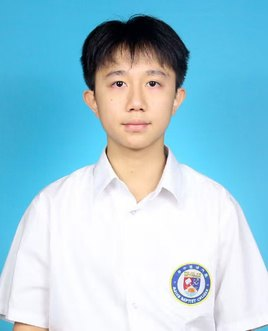
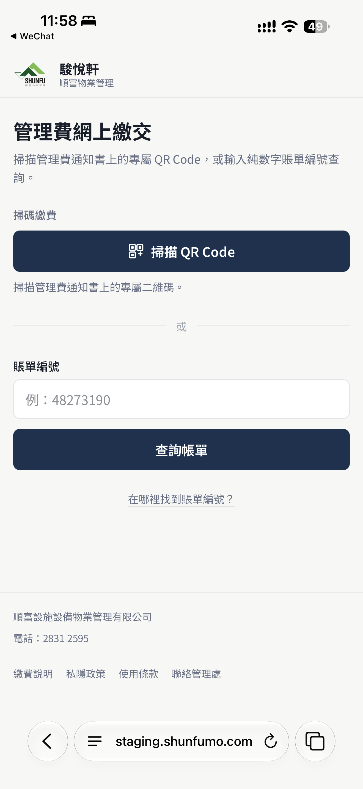
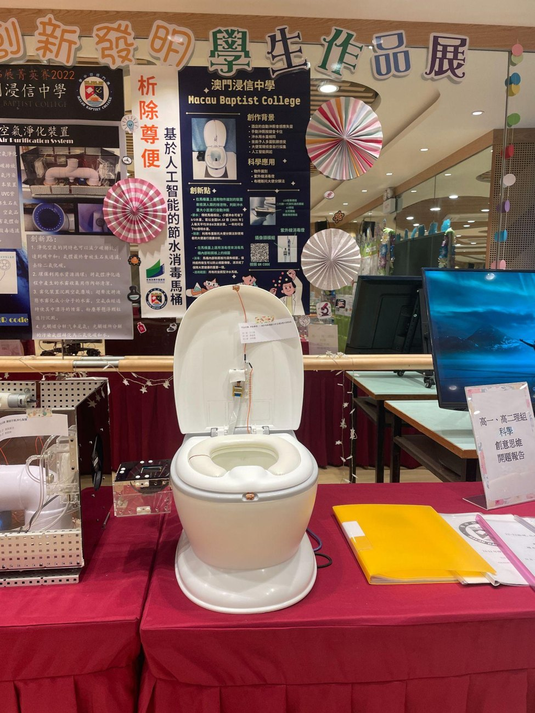
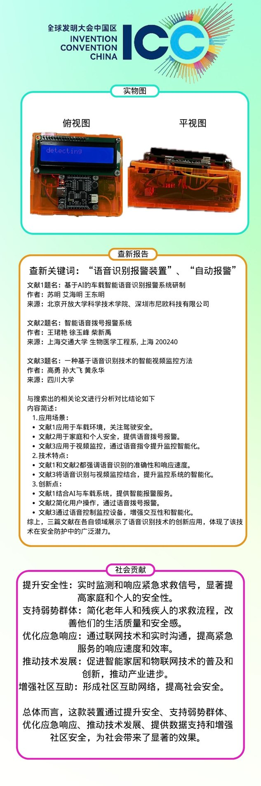

约两个月
完成企业系统主要开发
从理解业务到测试、调整及上线，系统已进入公司的实际工作流程。
了解项目 ↗
我是澳门浸信中学的高三学生，预计 2027 年毕业。
计划报读计算机科学或人工智能。
我为物业管理公司开发过收费系统，目前也在开发 mbook。
为澳门顺富设施设备物业管理有限公司开发，我独立完成主要开发工作，让收费及管理工作进一步电子化。
界面提供扫描通知书二维码、输入账单编号查询的入口。

与公司人员沟通，整理日常收费及管理工作需要的功能。
完成主要设计和程序开发，再进行测试和修改。
系统投入公司使用，并按实际工作需要调整。
公司开发证明及推荐信可于现场提供。

这是我参与的团队项目，围绕节水与自动冲水制作原型，并参加过多项科创比赛。
原型模拟识别后的冲水决策，并以声音模拟冲水。简报中的设计用水量属于原型方案描述。
我作为团队成员参与此项目；部分比赛证书以团队及作品名颁发。

共 32 项记录，可按类别、名称或年份查找。
32 项记录
包含获奖证书、编程等级、研学及义工证明。同一记录的配套证明收录在对应 PDF 内。
我平时会使用 AI 编程工具做项目，也想弄清楚这些系统如何规划任务、为什么会出错。
进入大学后，我希望先学好数学、算法和计算机系统，再深入学习机器学习与深度学习，继续研究 AI Agent 的规划和工具使用。
高一、高二学年「学业优异生」
2023/2024「名人堂」年度学术优异奖
履历保留原有排版，完整作品集包含项目说明与全部已整理的证书。
如需进一步了解项目或材料，欢迎通过电话或电邮联系我。